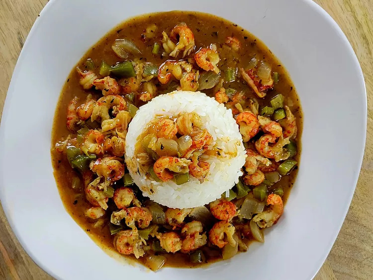

Home
Crawfish Etouffee

Description
This traditional Cajun stew gets its flavor from what is known as the Trinity-onion, green bell pepper, and celery-and
the rich spices used to create Cajun seasoning. It's similar to gumbo but with a thicker gravy-type base. Serve over
rice to make a complete meal.
Ingredients
- 5 tablespoons butter
- 5 tablespoons all-purpose flour
- 1 yellow onion, chopped
- 1 green bell pepper, chopped
- 2 stalks celery, chopped
- 4 cloves garlic, chopped
- 2 tablespoons Cajun seasoning, divided, or to taste
- 1 teaspoon cayenne pepper (optional)
- 2 cups fish stock
- Salt and ground black pepper to taste
- 1 pound cooked crawfish tail meat
Directions
- Melt butter in a Dutch over over medium heat. Stir in flour to make the roux, and stir continuously until
roux is at least the color of peanut butter, about 10 minutes, or for a darker roux, 15 to 20 minutes.
- Add onions, bell pepper, celery, and garlic; cook and stir for 5 to 7 minutes. Stir in half the Cajun
seasoning, cayenne pepper, and stock. Season with salt and ground black pepper. Reduce heat to low and
simmer for 15 minutes.
- Stir in crawfish, turn heat off, and cover. Let stand until crawfish are heated through. Taste and add
remaining half of Cajun seasoning, if needed.